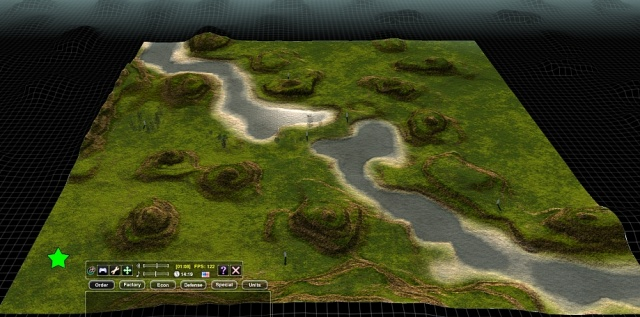

Mapdev:Main
Map Development
Maps are the fields on which the battles are fought, made with the implicit contract that they shall not alter game mechanics. They are made up of images and text files which describe the environment and its features, such as height, colour, background, details features, atmosphere and lighting etc. These images and text files are then compressed into a 7zip archive for distribution.
 |
{kind=link}
Beginners Tutorial
This beginners tutorial is split into three parts, the basic stuff, the more advanced basic stuff, and how to compile and create a map archive for distribution. It is intended to get you started, when you are comfortable with the concepts, please look over the technical documentation to further your knowledge.
Blueprint
Due to the amount of boiler plate files needed to create a fairly feature complete map, Jk has created a blueprint map to get things started
Technical Documentation
- General
- mapinfo.lua
- set.lua - feature set
- SMT format
- SMF format
- Gamedev:Archives
- Mapdev:sounds
- Mapdev:performance
- springignore.txt
- Terrain Shading
- Mapdev:diffuse
- Mapdev:detail
- Mapdev:splatdetail
- Mapdev:splatdetailnormals
- Mapdev:specular
- Mapdev:normal
- Mapdev:parallax
- Mapdev:skyreflectmod
- Mapdev:lightemission
- Terrain Features
- Mapdev:height
- Mapdev:metal
- Mapdev:terraintype
- Mapdev:grass
- Mapdev:features
- Mapdev:water
- Mapdev:borders
- Mapdev:minimap
- Environment
Scripting
Howto's
- Mapdev:Howto_voidwater/space
- Mapdev:Howto_spring_features_v1
- Mapdev:Howto_skybox
- Making a height map with Blender
Tools
A big list of tools used in developing spring games and assets:
Resources
Specific to Map Development
| Tool | Windows | Linux | MacOS |
|---|---|---|---|
| MapConv | Yes | ||
| MapConvNG | Yes | Yes | |
| Mapdeconv | Yes | ||
| smf_decompiler | Yes | Yes | Yes |
| Start Position Editor | Yes | ||
| Das Bruce's Mapconv Frontend | Yes | ||
| FrostRegen's SpringMapEdit | yes | yes | yes |
| Enetheru's smf_tools | yes |
Spring Add-Ons
Common Problems
Pink Map
Renaming the SMT file and not defining the new name in mapinfo.lua will result in a map with a pink texture. Also don't put any spaces in the name.
Map doesn't show in spring after compressing with 7zip
The most likely cause is that it was compressed using the solid archive option.
FIXME: Add windows and MacOS solutions.
For linux the option -ms=off needs to be given on the command line. eg.
7z a -ms=off myarchivename.sd7 dem files I want to archive
Flipped Images
Heightmap images compiled into map files are inverted. It is necessary to use the -i parameter of Mapconv to vertically flip the image so that it matches the texture.
smt name defined in smf
The SMT file name is hardcoded in the SMF, and renaming the SMT used to cause pink map issues, but the SMT can now be manually defined in mapinfo.lua thereby bypassing the entire issue altogether.
Map Development Wiki
Deprecated but not Deleted
We plan on integrating any and all useful knowledge from these pages into the rest of the wiki, they are kept here so that they are not hidden away.
Full Guides For Map Making (Outdated)
The guides listed below are outdated and scheduled for archival.
- aGorm's map creating Guide
- aGorms Ultimate Map Making Guide(unfinished)
- IceXuicks Map creating Guide
- Forboding Angel's map creating Tutorial
- Another tutorial from a designing point of view
- A Complete Map Making Tutorial (under construction)
- Runecrafter's Map Tutorial
- Beherith's map creating tutorial using the World in Conflict map editor
Specific Guides (Extremely Outdated!)
The linked pages below are scheduled for archival.
- Spring Map Definition(smd) reference
- Everything about Compiling your map
- Some things about map balance
- Map sizes in pixels and memory information about map sizes
- RogerN's height map tutorial
- Basic howto: create map texture with Povray
Spring_Features is an Archive which contains Stones, rocks, trees, and can be used for your map.